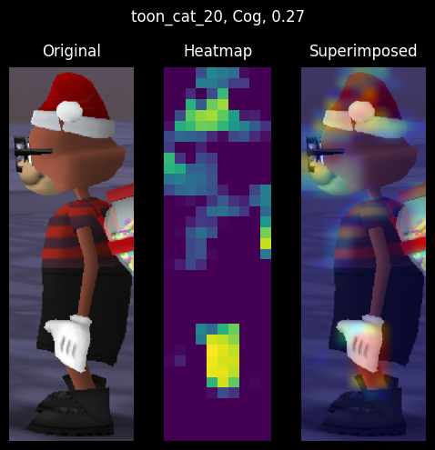

All animal species
This dataset lacks mismatched-colored Toons. As you can see below, all Toons have matching colors for their head, arms, and legs.
July 04, 2022
This article is the first in a series on ToonVision.
ToonVision is my computer vision project for teaching a machine how to see in ToonTown Online - an MMORPG created by Disney in 2003. The ultimate goal is to teach a machine (nicknamed OmniToon) how to play ToonTown and create a self-sustaining ecosystem where the bots progress through the game together.
This article covers binary classification of Toons and Cogs. The following article will cover multiclass classification of Cog suits (4 unique suits) and Cog names (32 unique names).
After reading this article, we'll have a better understanding of how to
In later articles, we'll dive into image segmentation and object detection. For now, let's focus on classification.
Table of Contents
Classification is the process of assigning categorical labels to input examples such as images, timeseries, or text. For instance, given a dog-vs-cat classification model and an image of a Pomeranian, the model will predict that the image is a dog. Technically, we would say that the model predicts that the image belongs to the "dog" class. Given an email, the model will predict that the email is spam. Given user activity data on a website, the model will predict whether the user is a human or a bot.
There are many classification problems: binary classification, multiclass classification, and multilabel classification.
Binary classification - also called two-class classification - is the most common type of classification problem. It is a problem where the model predicts whether an input example belongs to class A or class B.
In this article, we're building a model to predict whether an image is a Toon or a Cog.
On the other hand, multiclass classification is a problem in which the model predicts which single class an input example belongs. Where binary classification is a two-class problem, multiclass classification is a multi-class problem - meaning three or more classes. For instance, the model could predict that an animal belongs to the class of dogs, cats, rabbits, horses, or any other animal.
In the next article, we'll build a model to predict which of the four Cog suits an image belongs to. We can push the model even further to predict which of the 32 Cog names an image belongs to.
Lastly, multiclass multilabel classification is a classification problem where the model predicts which classes an input example belongs. For instance, a multiclass multilabel animal classifier can predict not only that an image belongs to the class of dogs, cats, rabbits, etc. but also the specific breed of dog, cat, rabbit, etc. Alternatively, a vehicle classifier can predict not only that an image belongs to the class of cars, trucks, motorcycles, etc. but also the specific make and model of car, truck, motorcycle, etc.
Other practical applications of multiclass multilabel classification include labeling which classes are present in an image. For example, an image of a park could be labeled as containing a tree, a bench, a flower, a pond, etc.
We could upgrade the single-label multiclass Cog suit classifier to a multilabel multiclass classification model and have it predict Cog state/level/hp/name/suit. But this adds unneeded complexity to the model and should be an article of its own. In the future, I will surely add the classification of the Cog's state: battle, patrolling, spawning, de-spawning, etc. Let's keep it simple for now.
ToonTown Online is a multiplayer online role-playing game (MMORPG) created by Disney in 2003. The game is based on a cartoon animal world where each player controls a Toon (a cartoon animal).
Like most MMORPGs, there's no single focus in ToonTown's gameplay. Players can perform whatever activities they want: socialize, fight Cogs, explore the world, complete tasks for rewards, fish, race karts, and even play minigames.
We won't discuss too many game details in this article because they are not relevant for our classification problem. We're building an image classifier, not a full end-to-end ToonTown AI (yet).
Toons are the main protagonists of ToonTown online. They are cartoon animals that enjoy having fun and are constantly using their arsenal of gags (jokes/weapons) to stop Cogs from invading their neighborhoods and converting ToonTown into a corporate dystopia.
Players can customize their Toon name, species, color, clothes, and other attributes. There are 11 unique animals:
Each animal can have a unique head shape, body length, and height. Furthermore, each animal can have mismatching colors for its head, arms, and legs.
All animal species
This dataset lacks mismatched-colored Toons.
As you can see below, all Toons have matching colors for their head, arms, and legs.
Toons progress through the game by completing ToonTasks and acquiring rewards. Ultimately, the goal is to eliminate the Cogs from the streets and acquire the most powerful gags.
A ToonTask is a quest given by ToonTown NPCs in which Toons must complete to earn rewards. Tasks include:
Rewards include jellybeans (currency), laff points (health points), gag advancements (weapons), access to other areas of the game, and more.
Cogs are the main antagonists of ToonTown Online. They are corporate robots that are trying to take over ToonTown and convert it into a corporate dystopia.
There are 4 Cog suits, each with a unique color:
Each suit in the corporate ladder contains 8 Cogs for a total of 32 unique Cogs.
While most Cogs can be found in the streets, the two highest-tiered Cogs of each suit can be found only in Cog buildings. We'll only acquire data about Cogs in the streets for this model. We can leverage Cog invasions to find building-specific Cogs in the streets.
More often than not, ToonTasks involve defeating Cogs. A ToonTown AI must be able to identify which Cogs are in a given image to engage in battle with the correct Cog.
There also exists delivery tasks that require Toons to deliver items to NPCs in the streets of ToonTown. Therefore, Toons need to identify and avoid Cogs in its path to deliver the items on time.
There doesn't exist a dataset for ToonVision, so I'll be creating one from scratch. The following sections will explain my dataset's design considerations, acquisition process, and extraction results.
Cog filename structure: cog_<suit>_<name>_<index>.png.
Toon filename structure: toon_<animal>_<index>.png.
Data folder structure:
img
├───data
│ ├───test
│ │ ├───cog
│ │ └───toon
│ ├───train
│ │ ├───cog
│ │ └───toon
│ └───validate
│ ├───cog
│ └───toon
├───raw
│ └───screenshots
│ ├ sample_img0.png
│ ├ sample_img0.xml
│ ├ sample_img1.png
│ └ sample_img1.xml
└───unsorted
├───cog
└───toon
There is no need to create folders for each Cog suit because we can filter on the filename.
Data acquisition is simple: Walk around TT streets, take screenshots, and save them to the raw folder. It's important to take screenshots from various distances and angles of each entity: front, back, and side.
Taking screenshots from up close is preferred. When taken from far away, the entity's nametag covers the entity's head, thus causing us to crop the entity's head or include the nametag - neither are good options.

There were a few difficulties with acquiring data:
Furthermore, there were class-specific data acquisition problems:
As a result, we have an imbalanced dataset. I hope to balance the dataset over time, but we'll work with the current dataset to better understand how to deal with a model overfitting to a small, imbalanced dataset.

The green lines indicate the desired number of samples for each class, whereas the red lines indicate the average number of samples per class.
The dataset shows a few overrepresented classes:
I'm using labelimg to draw labeled bounding boxes around Toons and Cogs.
Labels - also referred to as obj_name in our Python code - follow the format:
cog_<bb|lb|cb|sb>_<name>_<index>toon_<animal>_<index>The Cog labels contain shorthand notation (<bb|lb|cb|sb>) for each suit: Bossbot, Lawbot, Cashbot, and Sellbot, respectively.
This shorthand notation allows us to filter Cog data by filename and create a classifier that can distinguish between the 4 suits.
Bounding boxes are saved in XML format - specifically Pascal VOC XML - alongside the image in the raw/screenshots directory, as seen in the data folder file structure section above.

How the objects are labeled - how the bounding boxes are drawn - determines how the object will be extracted from the image. It's crucial to draw bounding boxes such that the entity is snugly contained within the bounding box. Furthermore, we must exclude entity nametags in the bounding box because the classifier will learn to "cheat" by identifying objects from their nametag rather than features of the entity itself.
The raw data (screenshot) is processed by functions in the data_processing module.
The module utilizes functions in img_utils.py to extract objects from the images using the labeled bounding boxes found in the image's corresponding XML files.
Specifically, the data extraction workflow is as follows:
img/unsorted folderraw/processed folderWhy move the raw image and XML file to the processed directory?
The processed directory is used to maintain a counter (referred to as an index) for each label. The data within the XML files are used to count the number of samples for each label. The label's counter is appended to a newly-extracted object's filename and the counter is incremented by 1. This process ensures we never overwrite existing sample images.
# %% Convert raw images to data images
def process_images(
raw_images_dir: str = SCREENSHOTS_DIR,
image_type: str = "png",
move_images: bool = False,
filename_filter: str = "",
) -> None:
"""Extract objects from raw images and save them to the unsorted img directory"""
screenshots = glob(f"{raw_images_dir}/**/*.{image_type}", recursive=True)
print(f"Found {len(screenshots)} screenshots in {raw_images_dir}")
for img_path in screenshots:
if filename_filter in img_path:
print(f"Processing {img_path}")
xml_path = img_path.replace(f".{image_type}", ".xml")
if path.exists(xml_path):
# Extract objects' labels and bounding box dimensions from XML
objs_from_xml = extract_objects_from_xml(xml_path)
# Extract objects from images using XML data
objs_from_img = extract_objects_from_img(img_path, objs_from_xml)
# Save extracted objects to images, modify image name to include object index
save_objects_to_img(objs_from_img, UNSORTED_DIR)
# Move raw image and its XML to processed directory
if move_images:
for f in [img_path, xml_path]:
new_path = f.replace(raw_images_dir, PROCESSED_DIR)
print(f" Moving {f} to {new_path}")
rename(f, new_path)
else:
print(f" No XML file found for {img_path}")
The extracted objects are of various sizes because the screenshots were taken from various angles and distances. Large objects are a result of the screenshot taken from up close, while small objects are a result of the screenshot taken from far away.
We can see from the image on the right how the object's distance affects the extracted object's quality. The further the object is from the camera, the smaller and more blurry the object is. We lose quite a bit of information about the object when the object is far away.
Overall, it would be ideal for the dataset to consist mostly of large, close-up objects because they contain more information about the object. Small, far-away objects lose information about the object and are not as useful for training. Furthermore, we could simulate this loss of information through image augmentation - rescaling or blurring/pixelating the image.
It would make a fun project to create a model that upscales the images to a higher resolution. Then we could use those high-resolution images in this dataset.
After the objects are extracted and placed in the unsorted folder, we can create the Keras dataset objects.
First, we need to create balanced datasets within the data/[train|validate|test] folders.
Remember that we're aiming for a 60/20/20 split for the training, validation, and testing datasets`, respectively.
Before creating the dataset objects, we need to move images from unsorted/[cog|toon] to data/[train|validate|test]/[cog|toon].
We can utilize the split_data() function in the data_processing module to do this.
def split_data(split_ratio: list[float, float, float], dry_run: bool = False):
"""Split the data into train(60%)/validate(20%)/test(20%) data sets"""
for unsorted_dir in [UNSORTED_COG_DIR, UNSORTED_TOON_DIR]:
cog_or_toon = unsorted_dir.split("/")[-1]
# Get all images from unsorted_dir
unsorted_images = glob(f"{unsorted_dir}/*.png")
num_images = len(unsorted_images)
# Split images into train/validate/test sets
num_train = int(num_images * split_ratio[0])
num_validate = int(num_images * split_ratio[1])
num_test = num_images - num_train - num_validate
print(num_train, num_validate, num_test)
# Shuffle filenames to randomize the order of the images
random.shuffle(unsorted_images)
train = unsorted_images[:num_train]
validate = unsorted_images[num_train:-num_test]
test = unsorted_images[-num_test:]
# Move images to train/validate/test directories
for images, dir_name in zip(
[train, validate, test], [TRAIN_DIR, VALIDATE_DIR, TEST_DIR]
):
for img_path in images:
new_path = img_path.replace(unsorted_dir, f"{dir_name}/{cog_or_toon}")
if dry_run:
print(f"Moving {img_path} to {new_path}")
else:
rename(img_path, new_path)
Creating tf.data.Dataset objects is straight-forward when using Keras' image_dataset_from_directory function.
I wrote a wrapper function, create_datasets, to create the train, validate, and test datasets:
from tensorflow.keras.utils import image_dataset_from_directory
def create_datasets(
image_size: tuple = (600, 200),
batch_size: int = 32,
shuffle: bool = True,
split_ratio: list[float, float, float] = None,
dry_run: bool = False,
):
if split_ratio:
split_data(split_ratio=split_ratio, dry_run=dry_run)
ds_train = image_dataset_from_directory(
TRAIN_DIR,
image_size=image_size,
batch_size=batch_size,
shuffle=shuffle,
)
ds_validate = image_dataset_from_directory(
VALIDATE_DIR,
image_size=image_size,
batch_size=batch_size,
shuffle=shuffle,
)
ds_test = image_dataset_from_directory(
TEST_DIR,
image_size=image_size,
batch_size=batch_size,
shuffle=shuffle,
)
return (ds_train, ds_validate, ds_test)
We can visualize the dataset's balance by using the plot_datasets_all() function in the data_visualization module.
Dataset balance

Now that we've created the datasets, we can compile the model. Compiling the model requires choosing a loss function, optimizer, and metrics to monitor the model's performance during training.
Our model is classifying between two classes, therefore we'll use the binary_crossentropy loss function.
The later models will be more complex - classifying 4 or 32 classes - so we'll use the [sparse_]categorical_crossentropy loss function.
I visualized the process of choosing an optimizer by plotting each optimizer's performance during training. Models were trained with each optimizer for 20 epochs using the same model architecture, dataset, hyperparameters, and static learning rate of 0.001 (1e-3).

A handful of the optimizers' losses flattened over the course of training as a result of a low learning rate or vanishing gradients. SGD commonly encounters this problem, and it's often due to a low learning rate.
I increased the learning rate for all flattened optimizers and plotted the loss scores and accuracies again, but didn't see much improvement. Additional callbacks, such as the learning rate scheduler, could be used to gradually decrease the learning rate and improve the model's performance. Adding momentum to the SGD optimizer could also help the model reach global loss minimums and learn more effectively. To find the best optimizer we should try different learning rates, utilize Keras' callbacks, and tweak the hyperparameters. However, this is beyond the scope of the article.
Optimizers with low performance (Adadelta, Adagrad, Ftrl, and SGD) were eliminated from consideration.
The performance between the remaining four optimizers - Adam, Adamax, Nadam, and RMSprop - is close enough that either one is a good choice.
Looking at the plot below, we see that Adam and Nadam are the most effective optimizers.
The Adam optimizer has a smooth accuracy and loss curve, while Nadam overfits quickly and has a more jagged curve.
Given the loss scores and accuracies plotted above, I've decided to go with the Adam optimizer.
The Adam optimizer is an adaptive variant of the stochastic gradient descent (SGD) algorithm.
Adam combines the advantages of two other SGD variants - AdaGrad and RMSProp - to create a more effective optimization algorithm for computer vision tasks.
Jason Brownlee wrote an excellent introduction to the Adam algorithm, and I encourage you to read it if you're interested in the technical details.
We're building a two-class classification model, so we'll use the binary_accuracy metric.
When training the multi-class models - with 4 and 32 classes - we'll utilize the categorical_accuracy metric.
Originally, I planned on only using a single callback, ModelCheckpoint, to save the model's weights. The callback saves the model's weights to a file at some interval - usually after each epoch or at the lowest validation loss value during training.
Saving the model at the lowest validation loss value is flawed because the model may have overfit to the data. In fact, during my experiments, I found that models that saved their weights at the lowest validation loss value were not performing well during evaluation.
As a result, I omitted the use of ModelCheckpoint.
Rather, I saved the model only if it exceeded the previous run's evaluation accuracy and loss.
This ensured I got a better model out of the 200 runs.
I believe this method is still flawed, but it proved to be more effective than saving the model based on the validation loss.
# Save the model based on the validation loss value
callbacks = [
keras.callbacks.ModelCheckpoint(
filepath=f"toonvision_{kwargs['name']}.keras",
save_best_only=True,
monitor="val_loss",
)
for kwargs in model_kwargs
]
# Save the model based on the evaluation accuracy and loss
for run in range(200):
history, evaluation = train_model(...)
loss, acc = evaluation
if (loss < evaluations_best[kwargs["name"]][0]) and (
acc > evaluations_best[kwargs["name"]][1]
):
evaluations_best[kwargs["name"]] = (loss, acc)
# Save the model
model.save(f"./models/toonvision_{kwargs['name']}_run{run}.keras")
The model is a simple CNN (convolutional neural network) with three Conv2D layers and four MaxPooling2D layers.
It's defined in the model_utils module within the make_model() function.

After experimenting with a handful of different architectures, I found the best architecture to contain a few intermediate layers with small filters. Remember that the more layers and filters in the model, the more room for the model to overfit to the data. We must find the right balance in the architecture to ensure the model is small enough to prevent overfitting but accurate enough to generalize on never-before-seen data.
def make_model(
name: str = "", augmentation: keras.Sequential = None, dropout: float = 0.0
) -> keras.Model:
inputs = keras.Input(shape=(600, 200, 3)) # Height, width, channels
if augmentation:
x = augmentation(inputs)
x = layers.Rescaling(1.0 / 255)(inputs)
x = layers.MaxPooling2D(pool_size=2)(x)
x = layers.Conv2D(filters=16, kernel_size=3, activation="relu")(x)
x = layers.MaxPooling2D(pool_size=2)(x)
x = layers.Conv2D(filters=32, kernel_size=3, activation="relu")(x)
x = layers.MaxPooling2D(pool_size=2)(x)
x = layers.Conv2D(filters=32, kernel_size=3, activation="relu")(x)
x = layers.MaxPooling2D(pool_size=2)(x)
x = layers.Flatten()(x)
if dropout:
x = layers.Dropout(dropout)(x)
outputs = layers.Dense(units=1, activation="sigmoid")(x)
model = keras.Model(name=name, inputs=inputs, outputs=outputs)
return model
Model summary
Model: "optimized_1e-5"
_________________________________________________________________
Layer (type) Output Shape Param #
=================================================================
input_53 (InputLayer) [(None, 600, 200, 3)] 0
rescaling_52 (Rescaling) (None, 600, 200, 3) 0
max_pooling2d_208 (None, 300, 100, 3) 0
conv2d_156 (None, 298, 98, 16) 448
max_pooling2d_209 (None, 149, 49, 16) 0
conv2d_157 (None, 147, 47, 32) 4640
max_pooling2d_210 (None, 73, 23, 32) 0
conv2d_158 (None, 71, 21, 32) 9248
max_pooling2d_211 (None, 35, 10, 32) 0
flatten_52 (Flatten) (None, 11200) 0
dropout_38 (Dropout) (None, 11200) 0
dense_52 (Dense) (None, 1) 11201
=================================================================
Total params: 25,537
Trainable params: 25,537
Non-trainable params: 0
_________________________________________________________________
I believe the architecture above has room for improvement. More experimentation - removing some Conv2D and MaxPooling2D layers, reducing the filter sizes, or maybe adding strides or padding to the Conv2D layers - could fine-tune the architecture and improve the model's performance. The chosen architecture may not be the best, but it will suffice.
Before training the actual model, we need to define a simple baseline to compare against. The baseline model will use the same model architecture, datasets, and hyperparameters as the optimized model. The only difference is that the baseline model does not perform any optimizations within the model or during training - no data augmentation, dropout, batch normalization, or learning rate decay.
model_kwargs = [
{
"name": "baseline",
"optimizer": tf.keras.optimizers.Adam(learning_rate=LR)
},
{
"name": "optimized_1e-5",
"optimizer": tf.keras.optimizers.Adam(learning_rate=LR, decay=1e-5),
"augmentation": data_augmentation,
"dropout": 0.90,
},
]
# %% Train each model for 25 epochs, and repeat it 200 times
histories_all, evaluations_all = make_baseline_comparisons(
epochs=25,
num_runs=200,
model_kwargs=model_kwargs,
)
We'll train the baseline for 25 epochs with a learning rate of 0.001 (1e-3). The baseline model will be trained 200 times, each time with a rebalanced dataset. The average of all 200 runs is plotted below.
The model's best run (#99) can be seen plotted below. It overfits to the training data after 9 epochs - see the validation loss increase. Furthermore, the model memorizes the dataset after 13 epochs - see the training accuracy plateau at 100% accuracy.
There are four tell-tale signs of overfitting in the plots below:
On average, the baseline model overfits after 6 epochs. Refer to the plot below to see the average loss and accuracy of the baseline model.
It's not surprising to see the model overfit so quickly. We're not performing any training optimizations and the learning rate is a bit high for the size of the dataset.
Let's take a peek at the model's predictions on the entire dataset.

Despite the overfitting, the baseline model is still able to predict the correct class with a 99% accuracy rate! Looking at the model's predictions on the entire dataset, we see that it's predicting the wrong class for 6 images. However, when it's predicting the wrong class, the model is heavily confused.
The images are ranked from highest error to lowest error.
The E stands for error, or how far away the model's confidence in the prediction is from the actual class.
The A stands for the actual prediction or confidence in the model's prediction.
Toons are predicted when A > 0.5, and Cogs are predicted when A < 0.5.
The first image is a Toon, but the model confidently predicts Cog. The second image is also predicted as a Cog, but that makes sense as there's a giant Cog arm occluding the Toon.
There's no obvious reason as to why the model confidently predicts Cog for the first image. Perhaps the color of Toon's shirt is similar to the Lawbot's blue suit? We'll interpret the layers' activations as heatmaps later to see if this is the case.
Let's optimize the model's training to prevent overfitting and acquire better results.
Now that we have a baseline to compare against, we can train the optimized model.
Given that we have a small dataset, we can utilize a few of the following techniques during training to prevent overfitting:
For the ToonVision model, we'll utilize data augmentation, dropout, regularization, small learning rate, and learning rate decay.
During training, we'll perform the following data augmentation techniques:
from keras import layers
data_augmentation = keras.Sequential(
[
# Apply horizontal flipping to 50% of the images
layers.RandomFlip("horizontal"),
# Rotate the input image by some factor in range [-7.5%, 7.5%] or [-27, 27] in degrees
layers.RandomRotation(0.075),
# Zoom in or out by a random factor in range [-20%, 20%]
layers.RandomZoom(0.2),
]
)
The purpose of the data augmentation is to increase the number of training examples so the model can learn from more data and never see the same sample twice.
It's important to augment the data just enough so the samples remain representative of the dataset. If we rotate the image too much or zoom in/out too much, we lose the context of the image and the model will not be able to learn from it.

Looking at the grid above, we see a single image that has been augmented with the data augmentation techniques. The top four images result from a slight data augmentation, whereas the bottom four images are from an aggressive data augmentation. The more aggressive augmentation is not representative of the dataset or real-world samples.
Dropout is one of the most effective and commonly used regularization techniques for neural networks. When applied to a layer, dropout randomly drops out (sets to zero) several output features of the layer. The number of dropped features is determined by the dropout rate - the percentage of features that are dropped.
For example, given a layer with 6 features, if the dropout rate is 0.5, then 3 features will be dropped.
Let's say a given layer normal returns a vector [0.1, 0.2, 0.3, 0.4, 0.5, 0.6].
After applying dropout with a rate of 0.5, the output vector will be [0.1, 0.2, 0.0, 0.0, 0.5, 0.0].
François Chollet, the author of the Keras library, recommends using a dropout rate in the range [0.2, 0.5]. However, because our dataset is so small and skewed, I found the best dropout rate to be in the range [0.7, 0.9]. For the remainder of the training, we'll use the dropout rate of 0.9.
model_kwargs = [
{"name": "baseline"},
{
"name": "optimized_1e-5",
"augmentation": data_augmentation,
"dropout": 0.90,
},
]
Learning rate decay is a technique that reduces the optimizer's learning rate as training progresses. Decreasing the learning rate will help the model to converge smoother and faster. We can implement learning rate decay in two ways:
I'll use the optimizer's decay argument to implement the learning rate decay in training.
from keras.callbacks import LearningRateScheduler
LR = 0.001 # Global learning rate value
def lr_schedule(epoch):
return LR * (0.1 ** (epoch // 10))
# Create a learning rate scheduler
lr_callback = LearningRateScheduler(lr_schedule)
# Add the learning rate decay to the optimizer
optimizers = [
tf.keras.optimizers.Adam(learning_rate=LR), # baseline
tf.keras.optimizers.Adam(learning_rate=LR, decay=1e-5),
]

As expected, the optimized model predicts classes more accurately than the baseline model. The model only misclassifies 3 images out of the entire dataset of 674 images. Not bad!
The worst prediction - an image of a Cog partially occluded by another Cog's nametag - has an error of 0.46/0.50. It makes sense for this image to be incorrect because we purposefully excluded occluded Cogs from the dataset. Ideally, the model would be able to generalize to the unseen data.
The other two images frequently appear in the wrong predictions of all models. I assume it's because the images contain brown in the middle of the image - a feature commonly seen in Bossbot and Sellbot Cogs.
We'll interpret the layers' activations as heatmaps later to see if this is the case. For now, let's compare the optimized model's average training loss and accuracy to the baseline model's.
The following plots show clearly the superior performance of the optimized model following 200 training runs. In all of the plots, the orange line represents the average loss and accuracy of the optimized model, while the blue line represents the baseline model.
We can see in the accuracy plot (top left) that the optimized model does not overfit to the training data, whereas the baseline model overfits at ~12 epochs. This is expected because the optimized model performs many techniques to prevent overfitting; the most important being dropout and learning rate decay.
The validation accuracy plot (top right) shows a similar trend. On average, the optimized model does not overfit, whereas the baseline model overfits at ~12 epochs.

The loss plots speak for themselves. The optimized model's loss plots are constantly decreasing and never converge to zero. One could argue that the validation loss flatlines after ~20 epochs, but at least it's not increasing.
On the other hand, the baseline model displays telltale signs of overfitting: training loss converges to near-zero after ~15 epochs while the validation loss decreases to ~0.13 and steadily increases thereafter.
The validation plots for both models are quite sporadic compared to the smooth, continuous training plots. We can see that the optimized model often overfits to the validation data - enough to show jagged lines on both validation accuracy and loss plots.
I suspect the validation plots' sporadic movement is due to the small size of the validation dataset. The fluctuations could also be due to the validation set being not representative enough of the training set. The former is a difficulty I burdened myself with early on to learn how to deal with poorly-balanced datasets. The latter is why I rebalance the datasets - un-split and re-split datasets - before each training run to get an accurate model performance over 200 runs.
An alternative to shuffling the datasets would be to utilize k-fold cross-validation, but that's beyond the scope of this article. Remember, we're keeping it simple!
We can now clearly see the optimized model's superior performance during training. Let's take a look at the model's performance on the test dataset.
Recall that we split the dataset into three sets: training (60%), validation (20%), and test (20%). The test set is used to evaluate the model's performance on never-before-seen data.
The box plots below show the distribution of 200 evaluations of the models' predictions on the test dataset. Once again, the optimized model outshines the baseline model.
The optimized model has a smaller test accuracy spread (smaller box) and its median (0.978) is more than a basis point higher than the baseline (0.965). Furthermore, excluding the outliers, the optimized model's minimum accuracy does not fall below 0.95, whereas the baseline model's minimum accuracy falls well below 0.93.

The loss plot is even more damning for the baseline model. The optimized model's loss spread is much smaller and lower than the baseline model's. We see the baseline model has a median loss of 1.6 while the optimized model's median loss is 0.5. Lastly, the optimized model's outliers are more contained with a range of [0.18, 0.21] whereas the baseline model's outliers range from [0.42, 0.68].
Enough proving that the optimized model is superior to the baseline model. Let's interpret what the model's layers are seeing as heatmaps.
Neural networks are often considered to be black boxes: they learn data representations that are difficult to interpret in human-readable form. You throw a bunch of data at a network of math functions and it solves all of your problems; it's magic.
Convolutional neural networks - specifically for image classification problems - are quite the opposite. We can visualize the convnet's activations - intermediate layer outputs - as heatmaps and clearly understand what the model is looking for in an image.
We'll peel back the layers of the model in the following sections and interpret what the model has learned from our dataset.
Specific code examples will not be provided in the sections below; instead, you'll be guided through the process of interpreting the model's activations.
The code can be found in main.py on my GitHub.

Visualizing intermediate activations is useful for understanding how success layers transform the input data. This will give us a view into how the input is decomposed by the network's learned filters. We'll input the image seen on the right through the model and interpret the activations.
The following image grid shows the activations of all Conv2D and MaxPooling2D layers. Notice how the number of feature maps - also called activation channels - increases as the input progresses through the model. The growing feature maps are due to the number of filters used in each layer: 16, 16, 32, 32, 32, 32, as seen in the model summary. The earlier layers act as edge detectors, while the later layers encode feature detectors. In English, the earlier layers contain image-specific features (edges, colors, darkness, etc.) and the later layers contain class-specific features (suits, shoes, ears, eyes, etc.).
Furthermore, we find that the image becomes smaller and more abstract as it progresses through the network.
This is a direct result of the sub-sampling performed by the MaxPooling2D layers.
Recall that MaxPooling2D layers reduce the input's size by a factor of pool_size, where our pool_size is 2 - meaning the input is halved in both dimensions.
This allows the network to pool together useful information from the input pixels that are closest to each other.
In short, our input transforms from a 200x600 image to a 10x35 image - a high-quality image to an abstract, low-quality image.
Lastly, we see that the network learned to recognize the image's shape and color. The brightest pixels represent the highest activations in that specific channel. For instance, in the final channel of the final layer (bottom-right corner of the grid), we can see the highest activations in the Cog's pants and shoes. Some layers may contain channels with no activations, resulting in a blank image. This means the pattern encoded by the filter is not present in the input image. We'll discuss patterns and filters in the next section.
After looking at the activations of different inputs, I found that the model learned to recognize the Cogs by their heads, hands, and dark-colored suits. I anticipated that the model would identify Toons by their facial features or gloves, and I was somewhat correct. However, the model classified Toons by their accessories and clothes: backpacks, shoes, and pants, which were all strong feature indicators. Surprisingly, dog/deer faces - specifically ears, antlers, and noses - were the only features to outperform accessories/clothes indicators.
Feature maps of a dog Toon
I'm quite fond of being able to visualize the model's activations. It is a great way to understand how the model is learning to recognize the input data.
Filters are the weights that are learned by the network - they are the model's "knowledge". They are used to extract information or extract patterns, from the input data. Filters tell us a lot about how the convnet layers see the world.
The filters from the first layers in the model encode simple directional edges and colors. The remaining layers encode more complex patterns, although the patterns are not as clear in such a small model. We can make out blue and yellow patterns with diagonal and straight-line edges, but not much else.
If our model were larger or trained for more epochs, we would see more complex patterns. More interesting patterns can be seen in the Keras blog post, How convolutional neural networks see the world. It's definitely worth the read to see how beautiful the patterns can be in more complex models.
The final visualization technique - class activation maps (CAM) - is useful for understanding which parts of an image led to a specific class prediction. This helps debug wrong predictions and understand classification mistakes.
The technique involves scoring subsections of the image based on how much they activate a class's feature detectors. We take the average score across all feature maps to generate a heatmap of the image, where the hotter the pixel, the more activation of the predicted class. Lastly, we superimpose the heatmap on the original image to visualize the activation - visualize what parts of the image activate the class.
We'll use the Toon on the right, "cat_20", to visualize the CAM. This image was mentioned earlier as always showing up in the wrong predictions of our models. Let's figure out why the models cannot predict the correct class for this image by visualizing the CAM.
|  | |
| Toon "cat_20" commonly predicted as Cog | Cog with similar heatmap as "cat_20" |
The Toon's heatmap and superimposed images show that the model identifies Toon accessories more than Toon features (eyes, face, gloves). If the model recognizes the accessories, why does it still predict the wrong class? The issue seems to be two-fold:
Point 1 demonstrates that we need must include more Toons images with the same coloration as Cogs. Notice how the Toon's black shoes were not detected by the model because they match the Cogs' black shoes.
Point 2 is trickier to resolve. We can see the model identify the Toon's facial features, but that's not enough for it to correctly label the image. To fix point 2, we need to include more Toons in our dataset. The class imbalance is a great problem in edge cases like this.
An alternative solution to point 2 is to include padding in our convnet layers to not lose information. With padding, the heatmap would include the entirety of the backpack seen in the original image instead of cropping it out. Including the entire backpack in the heatmap likely would have resulted in a correct prediction.
I found the heatmaps to be the most useful visualization technique for understanding the model's predictions. Below are additional findings that I found interesting:
Cog hands are important Cog feature indicators
The Bloodsucker Cog from the wrong predictions section is wrongly classified as a Toon because the Cog's hands are occluded by the nametag. Furthermore, the heatmap shows high activations in the image's midsection, which is commonly seen in Toon images.
Colorization of Toon clothing/accessories affect model accuracy
| Light-colored clothing and accessories | Dark-colored clothing with highly-activated accessories |
The colorization of a Toon's clothes and accessories greatly affects the model's accuracy. The lighter the Toon's clothes/accessories, the higher chance the model will predict the correct class. The darker the Toon's clothes/accessories, the lower chance the model will predict the correct class.
On the left, we see a mouse with light-color clothing and accessories. Both the clothing and the accessories are highly activated. We can even see the facial features, gloves, and ears being activated.
The crocodile on the right, however, is wearing dark-colored clothing. That doesn't stop the model from identifying the Toon's pink hat and shoes and correctly labeling the image. Unfortunately, the Toon's facial features are barely activated.
It would be ideal for Toon's facial features and gloves to be the prominent feature indicators in the model, but that's not possible with our small dataset.
Toon features are decent indicators on accessory-less Toons
| High facial-activations on a duck Toon | High facial and glove activations on a dog Toon |
The Toons' eyes and gloves are highly activated in both heatmaps. Also, note how the dark streak on the Toons' shirts (under the right arm) is not at all activated in the heatmaps. This is commonly seen in heatmaps containing Toons with Cog-colored clothing; dark clothes are not activated.
As much as I enjoyed writing this article, there are many areas in which I would like to improve: dataset balance, model architecture, and model interpretation. The following article will ensure improvement in the areas listed above.
Balancing the dataset requires time and effort. The imbalanced dataset in this article was created in haste. I wanted a quick dataset to train on so I could write this article, but I also wanted to learn how to work with a poorly-balanced dataset. With time, I'm confident in my ability to balance the dataset.
Furthermore, the use of a validation set resulted in small training, validation, and testing datasets. As a consequence, the validation scores changed a lot depending on which data points were chosen for validation and training sets. This is commonly referred to as having a "high variance" with regard to the validation split and prevents us from properly evaluating our model. Future articles will forego the use of validation sets until the dataset is sufficiently grown and balanced, or implement K-fold cross-validation.
In conclusion, using an imbalanced dataset should be avoided if possible, but it's not much of a hindrance for small models.
Model architecture is a bit of a challenge. I'm not sure how to best structure the model's layers and filters, and my readings have shown no clear direction for designing architectures.
The original model architecture was based on a model found in François Chollet's book, "Deep Learning with Python". After writing this article, I'm sure the model can be improved. For instance, the first MaxPooling2D layer should be removed and padding should be added to prevent information loss. Multiple dropout layers can be added in between the convolutional layers rather than a single layer at the end of the model. Stacks of convolutional layers can be added to the model to increase the number of filters.
I must streamline a process to design, compare, and measure the performance of different model architectures. This will allow me to select the best model for my dataset without having to manually design and test models.
Of course, measuring performance is heavily dependent on a well-balanced dataset, so that must remain my highest priority.
Model interpretation is a crucial step in the process of model selection. It's important to understand the model's output and how it is interpreting the output. We can understand what the model is looking for in an input image - what features are important to the model - by visualizing its layers' outputs.
Interpreting the model's output above was an eye-opener for me. The intermediate layer activations are shown as heatmaps which are superimposed on the input image. The heatmaps highlighted how the model searches for a specific feature in the image, such as faces, gloves, or accessories. These interpretations are incredibly useful for understanding the model.
Moving forward, I will streamline the process of visualizing the model's layers' outputs. I would like to be able to visualize the model's outputs in a way that is easy to understand to select the best model after training.